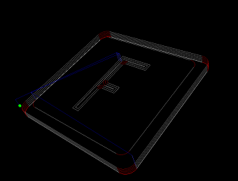

Getting Started: Your first MakerCAM project!
-
Step #1: Open makerCAM.com. Zoom out until you can see the origin.
-
Step #2: Select Insert -> Rounded Rectangle. When the dialog box comes up, input 3.5 for both the length and width. leave the radius as 0.2. Click OK. You now have a rounded rectangle! Move the rounded rectangle so the bottom left corner is on
the origin (0,0).
-
Step #3: Select Insert -> Rounded Rectangle. When the dialog box comes up, input 3.125 for both the length and width. leave the radius as 0.2. Click OK. You now have another rounded rectangle! Move the rounded rectangle so the bottom left
corner is slightly inside of the bigger rectangle. Like this ->.
-
Step #4: Select the pencil tool from the toolbar in the top left corner of the screen. Use it to draw the first letter of your last name. Draw it in block style. It might take a few tries. If you mess up, switch to the pointer tool, select your
line and press 'delete' on your keyboard. Once you have a rough shape of your letter, take a step back and have a look. A little rough isn't it? That's OK, it's a start!
-
Step #5: Take the pointer tool with the circle on the end, and start working your letter into shape. Zoom in, and hover over one of the corners. See the red dot? Now you can click and drag that red dot until your line is straight (or in the
shape you want it). If you put that red dot onto another one, it will join the two lines together. Now we're getting somewhere! Once you're happy with the letter, go ahead and center it inside the rectangles.
-
Step #6: Select your letter with the pointer tool. Once it's selected, the border will turn orange. Now, take a deep breath, we're going to make our first toolpath! Click CAM -> Pocket. Fill in the following values then click OK. Your letter
should look like it's filled in with a hatch pattern.
- name: letter_pocket
- tool diameter: 0.125
- target depth: -0.03125
- safety height: 0.25
- stock surface: 0
- step over: 40
- step down: 0.03125
- roughing clearance: 0
- feedrate: 30
- plunge rate: 10
- direction: counter
-
Step #7: Select the inside rounded rectangle (the one we made in step #3). Click CAM -> Follow Path Operation. Fill in the following values, then click OK. Your line will look highlighted yellow.
- name: trim_engrave
- tool diameter: 0.125
- target depth: -0.03125
- safety height: 0.25
- stock surface: 0
- step down: 0.03125
- feedrate: 30
- plunge rate: 10
-
Step #8: Select the outside rounded rectangle (the one we made in Step #2). Click CAM -> Profile Operation. Fill in the following values, then click OK.
- name: coaster_cut_out
- tool diameter: 0.125
- target depth: -0.26
- inside/outside: outside
- safety height: 0.25
- stock surface: 0
- step down: 0.03125
- roughing clearance: 0
- feedrate: 30
- plunge rate: 10
- direction: clockwise
-
Step #9: It's time to generate your g-code! If you check the "view cuts" option in the top right portion of the screen, your toolpaths will be filled with nice colors representing the operations. If everything looks OK, go ahead and click CAM
-> calculate all. Nice work.
-
Step #10: Export Your g-code! Your coaster should look a little goofy right now, with colors and curves representing the toolpaths. That's OK, Imaging those toolpaths as a map for your bit to follow. Once you have calculated all toolpaths,
let's go ahead an export the file. Click CAM -> export g-code. A couple of things to remember on this screen.
The order should go:
- letter_pocket
- trim_engrave
- coaster_cutout
As long as that's OK, then click 'all' (will highlight all of your operations), then click "Export Selected Toolpaths". A file dialog box will prompt your for a location to save your file. let's name it 'monogram_coaster.nc' and save it
somewhere that you will remember. After the file is exported (it'll only take a split second), go ahead and save the svg file from makerCAM. Click file -> save SVG. Save it somewhere that you will remember.
Next Step: Preview gcode!
- Browse to www.buildlog.net/gview/
- open a file browser (explorer or finder), find your newly created file (monogram_coaster.nc) and drag and drop it into gview.
- See that? Yeah, that's your coaster! If you hold the 's' key down on your keyboard and use your mousewheel, you can zoon in and out. Also, if you click and drag, you can rotate the model till your heart is content. Pretty amazing right!
- Does everything look right?
- The blue lines are 'rapids" that where your machine raised up above the work surface and moves quickly to another point. These moves are not intended to be cutting moves, they are simply getting the machine from one point to another,
quickly
- The red lines are arcs. Those are moving in both the X and Y direction simultaneously
- The green dot is the origin. Pay attention to this and make sure your parts lower left corner is close to the dot. If it's not close to the dot, then go back into makerCAM, highlight everything, and move it closer to the origin (0,0). Then
recalculate all, and re-export your file.

gview gcode preview
Next Step: Setup your work area
Do you ever get the feeling that someone's not telling you something? That's how I felt the first few times I tried to cut a job on my first CNC machine. I had drawn the part (check!), I had CAMmed the part (check!), I had simulated the part
(check!). But when it came to actually cutting the part... well, it seemed like that information was left out, or I couldn't find it. Either way, I was staring at my machine trying to figure out where to begin. So you won't have to go through
that same excercise in frustration, I'm going to lay this out for you step by step
- Chuck in a 1/8" endmill. Two flute, 4 flute, whatever you have will work as long as it's not a v-bit.
- Your Shapeoko came with a wasteboard. It's 1/4" MDF that measures about 400mmx450mm. That works really well for small stuff, and for this coaster, we won't need any additional hardware. If you want a more comprehensive clamping solution,
have a look at this page.
- Cut 4 pieces of double sided tape that are approximately 2" long each. Stick those pieces around the perimeter of your wood. Make sure they're on there nice and tight!
- Move your machine all the way to the front/left corner of the work area. If the machine is off, you can just grab the spindle and pull it over into position. Take note of roughly where that location is. OK, now move the spindle out of the
way.
- Stick your piece of material down onto the waste board. Give it a nice firm press to make sure it's going to stay. The last thing we want is for the material get thrown out of the machine and hit you in the face!
- Move your machine back to the position you noted earlier. Keep in mind that it doesn't need to be in the *exact* same place, we're just putting it in the front/left corner. This is going to be our 0,0 position.
- Now lower your spindle until the bit is just barely touching the top of your material. A good way to gauge is to lower it down onto a single sheet of paper. As the bit gets close to the paper, try moving the paper around slightly. When the
bit prevents the paper from moving, then you're at the right height!
- Great! We're all setup now at 0,0,0. Go ahead and power on your arduino and grblShield. You will hear a very satisfying *wooosh* and/or click noise as the stepper motors are engaged.
- Open your gcode sender program, browse to and open the file we generated In stage 1. (monogram_coaster.nc)
- Take a deep breath
- Click Print!
This is what is going to happen:
First Operation: Your bit will raise up to 0.25" above the material. Then it's going to do a rapid travel to the center of your Letter (my letter was F). Once it gets to the correct position, it's going to lower itself
down to -0.03125" *below* the surface. After it reaches it's target depth of the first pass, the tool will begin cutting away material in the X/Y direction as it creates the letter shaped pocket. Go ahead and watch it work, it's pretty amazing
that what you just drew on the computer is now being cut into a real physical usable object!
- name: letter_pocket
- tool diameter: 0.125
- target depth: -0.03125
- safety height: 0.25
- stock surface: 0
- step over: 40
- step down: -0.03125
- roughing clearance: 0
- feedrate: 30
- plunge rate: 10
- direction: counter
Second Operation: After your letter is done being pocketed, the bit will come back up to the safe travel height (0.25" *above* the work surface). From there it's going to travel to the beginning of the "trim" line.
Because this is an engrave operation, the bit is going to be position exactly centered on that line. The spindle will lower itself down to -0.03125" *below* the work surface and begin engraving the decorative rounded rectangle around the inside
of the coaster. We specified a target depth of only -0.03125", so it'll only take one pass before it's complete
- name: trim_engrave
- tool diameter: 0.125
- target depth: -0.03125
- safety height: 0.25
- stock surface: 0
- step down: -0.03125
- feedrate: 30
- plunge rate: 10
Third Operation: With the trim line finished, the toolhead will again raise up to 0.25" above the work surface, then make it's rapid move to the start point of the outside profile. We specified an outside profile, so
the bit will position itself on the outside of our intended line, just like we want. The toolhead will then lower itself down to -0.03125" below the work surface. After the bit has plunged to the correcte depth, it will begin cutting the outside
profile. The first pass will look just like the decorative trim line that was placed in the previous step. However, after the first pass, you'll notice something new. The tool will stop moving in the X/Y direction, and will perform another move
in the Z direction. It will move down another -0.3125", because that's what we specified as the pass depth.
After the first pass, the tool will move down another -0.03125", bringing it to a cumulative depth of -0.0625". This will continue 8 times, until it's reached the depth of -0.25". But wait: we specified a depth of -0.26"... and our depth pass is
-0.03125"... so what will happen when it gets to a depth of -0.25"? Will it go down to -0.28215"? Nope. Luckily, our CAM program is smart enough to figure that out on it's own. If the distance to go is less than our depth pass, the final pass
will be done by calculating the difference between our target depth (-0.26") and the next to last pass depth (-0.25"). In our case this will produce a final depth pass of 0.01".
- name: coaster_cut_out
- tool diameter: 0.125
- target depth: -0.26
- inside/outside: outside
- safety height: 0.25
- stock surface: 0
- step down: -0.03125
- roughing clearance: 0
- feedrate: 30
- plunge rate: 10
- direction: clockwise
Helpful Hints
Here is where things get interesting: As your tool cuts away at the last bits of material, your part may have the tendency to want to either pop out, or worse, partially pop out and jam between the cutting bit and it's target coordinate. There are
3 things you can do in a situation like this:
- Before securing the material to the wasteboard, put a piece of adhesive where the part will be (this is hard to do without measuring!) [probably should have told you that back in step #1...]
- Use something to hold the part down as the final pass comes around. I like to use a long-ish screwdriver. Some people call this method "using a chicken stick". Here's what not to do: DO NOT USE YOUR HANDS! KEEP YOUR HANDS OUT OF THE WORK
AREA WHILE THE SPINDLE IS ENGAGED AND THE JOB IS RUNNING!
Just let it go. 9 times out of 10, the part will either stay in place, or pop out accordingly at which time you can stop the job, wait for the spindle to stop, and take your finishe part out. As a note: The thinner your final depth pass,
the more elegently your part will be released. So with our final depth pass of 0.01", the part will probably just stay put like it is supposed to.